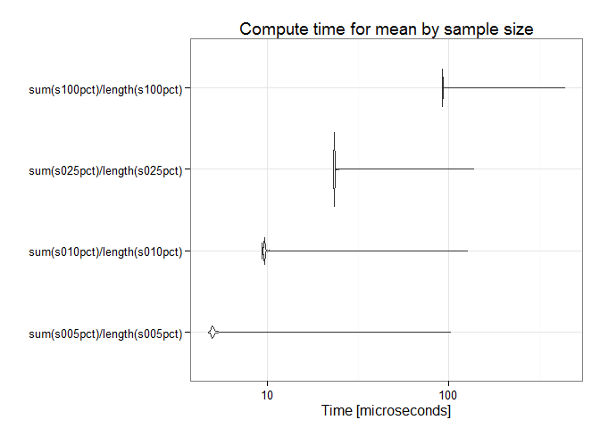
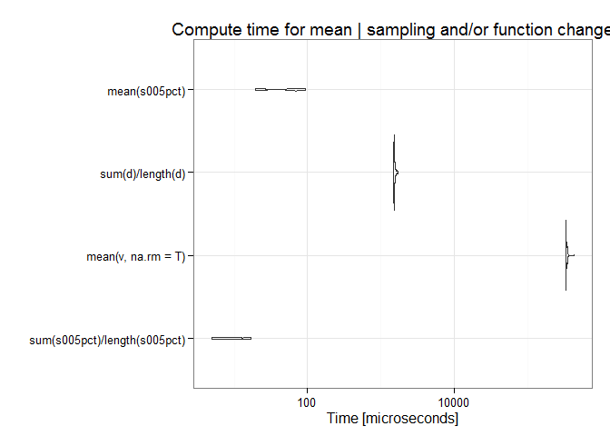

Data Extraction Evaluation
Matthew Leonawicz
Results
All points? No point.
Using the sample mean is helpful as a data reduction strategy while not being harmful in terms of representativeness. The possible “tradeoff” itself appears to be largely a false dichotomy. There is no benefit to computing the mean of all pixels in the example map layer.
How many samples do we really need?
In this example even a two percent subsample of the original non-NA data cells is small enough to limit us to a five percent probability of obtaining a mean that differs from the mean computed on the full dataset by an amount equal to or greater than the smallest discrete increment possible (0.1 degrees Celsius for SNAP temperature data) based simply on the number of significant figures present. Furthermore, even for nominal sample sizes, the 0.05 probability is one almost strictly of minimal deviation (0.1 degrees). The probability that a sample mean computed on a subsample of the map layer deviates enough from the population mean to cause it to be rounded to two discrete incremental units from the population mean (0.2 degrees) is essentially zero (except if using crudely small sample sizes).
Although a two percent subsample appears sufficient for this criterion, let’s use a five percent subsample for illustration. This is clearly overkill in this example since the p-value attenuates to the range of 0.019 to 0.029 by around 2.5 percent subsampling.
How much faster does this make things go?
Compute time for the mean is of course affected by the sample size.
## Unit: microseconds
## expr min lq mean median uq
## sum(s005pct)/length(s005pct) 4.976 5.287 5.666946 5.287 5.598
## sum(s010pct)/length(s010pct) 9.641 9.952 10.314172 9.952 9.953
## sum(s025pct)/length(s025pct) 23.325 23.636 24.796582 23.636 23.947
## sum(s100pct)/length(s100pct) 92.056 92.367 94.910501 92.368 92.679
## max neval
## 80.238 10000
## 89.879 10000
## 946.378 10000
## 1204.509 10000
Using optimal subsampling to estimate the mean achieves speed improvements orders of magnitude greater than what can be achieved through strictly algorithmic changes to how the mean is computed on the full dataset, though those help immensely as well, also by many orders of magnitude. Sampling is vastly more effective, but both approaches can be combined for maximum benefit.
## Unit: microseconds
## expr min lq mean
## sum(s005pct)/length(s005pct) 5.287 6.0645 11.83362
## mean(v, na.rm = T) 390186.473 398172.6800 408639.38104
## sum(d)/length(d) 1485.343 1504.7805 1591.88281
## mean(s005pct) 18.038 21.1485 47.83510
## median uq max neval
## 9.9520 19.904 23.948 100
## 401908.2740 413832.069 504649.006 100
## 1519.7085 1558.274 3422.882 100
## 55.5135 65.310 86.459 100## Unit: microseconds
## expr min lq mean
## sum(s005pct)/length(s005pct) 5.287 6.0645 11.83362
## mean(v, na.rm = T) 390186.473 398172.6800 408639.38104
## sum(d)/length(d) 1485.343 1504.7805 1591.88281
## mean(s005pct) 18.038 21.1485 47.83510
## median uq max neval
## 9.9520 19.904 23.948 100
## 401908.2740 413832.069 504649.006 100
## 1519.7085 1558.274 3422.882 100
## 55.5135 65.310 86.459 100## Unit: microseconds
## expr min lq mean
## sum(s005pct)/length(s005pct) 5.287 6.0645 11.83362
## mean(v, na.rm = T) 390186.473 398172.6800 408639.38104
## sum(d)/length(d) 1485.343 1504.7805 1591.88281
## mean(s005pct) 18.038 21.1485 47.83510
## median uq max neval
## 9.9520 19.904 23.948 100
## 401908.2740 413832.069 504649.006 100
## 1519.7085 1558.274 3422.882 100
## 55.5135 65.310 86.459 100
Similar to above, below are the median compute times for the mean using (1) the full data while removing NAs, (2) the sum divided by the length after NAs removed, (3) the mean of a subsample, and (4) a combination of (2) and (3).

Here is the same plot after removing the first bar to better show the relative compute time for the other three methods.
How does the benefit extend to extractions on maps at different extents, data heterogeneity, climate variables, or for other common statistics such as the standard deviation? These are open questions at the moment, but for one thing, I expect more samples are needed for precipitation than temperature. I also expect more samples needed to estimate parameters with higher moments.